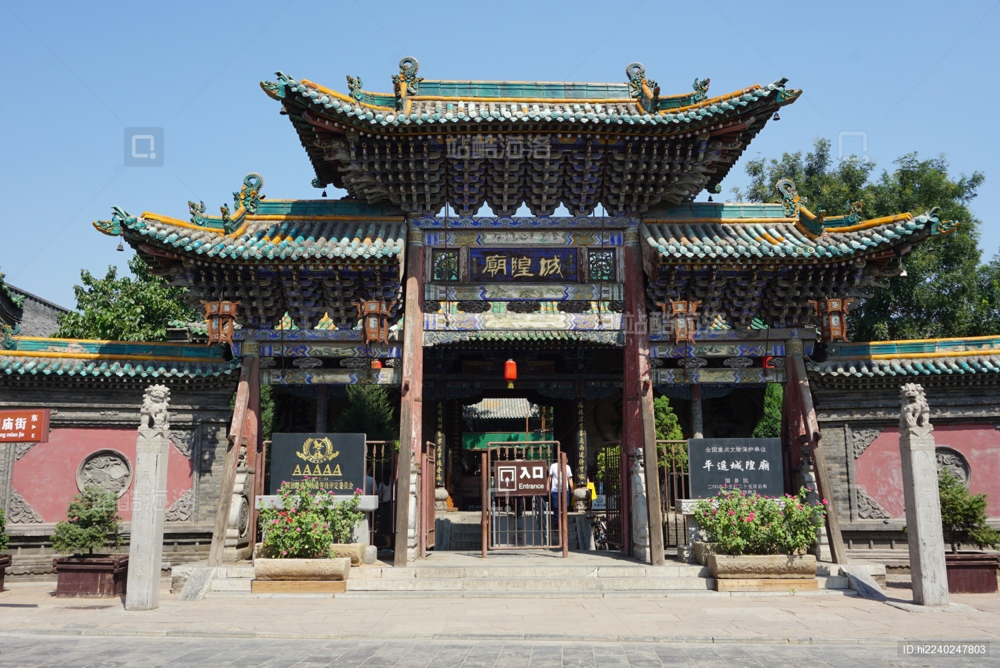

平遥城隍庙位于平遥古城隍庙街，始建于明朝洪武三年（1370年），是中国保存最完整的城隍庙之一。城隍是中国民间信仰中守护城池的神灵，城隍庙则是供奉城隍的场所，体现了古代城市的精神寄托。
明代初期，随着平遥古城的重建和扩建，城隍庙作为城市的重要组成部分同步兴建。明洪武三年，城隍庙在现址落成，成为平遥古城的重要文化地标。
清代时期，城隍庙经历了多次修缮和局部改建。乾隆年间，对主要建筑进行了全面翻新，形成了今天我们所见的基本风貌。道光年间，又增建了戏台等附属建筑。
平遥城隍庙占地面积约8000平方米，采用中轴对称的布局，由南至北依次为戏台、山门、前殿、后殿、寝宫等建筑。
戏台位于庙宇最南端，是举行祭祀仪式前的表演场所，其设计精巧，雕刻华丽，体现了古代建筑艺术的高超水平。
山门是城隍庙的入口，两侧设有钟楼和鼓楼。穿过山门进入前殿，这里是供奉城隍爷和城隍奶奶的主要场所。大殿内陈列着各种祭祀用品，墙壁上绘有栩栩如生的壁画。
后殿和寝宫位于庙宇北端，是供奉城隍神像和休息之所。这些建筑之间通过回廊相连，形成了完整的祭祀空间。
"平遥城隍庙不仅是一座宗教建筑，更是中国古代城市文化和社会结构的缩影，其建筑布局和装饰艺术具有极高的历史价值。"
——《中国古建筑研究》
平遥城隍庙以其精湛的建筑艺术和装饰工艺闻名。
庙宇内的木雕、砖雕和石雕堪称一绝。梁枋上的木雕图案精美绝伦，内容包括花卉、瑞兽、人物等，寓意吉祥和美好。砖雕多用于照壁、墀头等部位，工艺精细，层次丰富。石雕则多用于柱础、栏杆等部位，线条流畅，造型生动。
城隍庙内的壁画也是其重要的艺术特色之一。大殿墙壁上的明代壁画保存完好，内容丰富，包括神话故事、历史典故、民间生活场景等，色彩鲜艳，构图精巧。
平遥城隍庙不仅是历史建筑，更是一座活态的民俗文化博物馆。
每年清明节、中元节等传统节日，城隍庙都会举行盛大的祭祀活动。人们在这里祈求平安、丰收，这些活动延续了数百年的传统，体现了中国传统文化中对祖先和神灵的尊敬。
庙内的陈列品和文物展示了丰富的民俗文化，包括古代祭祀用品、传统服饰、民间工艺品等，为游客提供了深入了解中国传统民俗的机会。
如今，平遥城隍庙已成为研究中国古代宗教文化、民间信仰和建筑艺术的重要场所，每年吸引着大量游客前来参观，继续传承着中国传统文化的精髓。